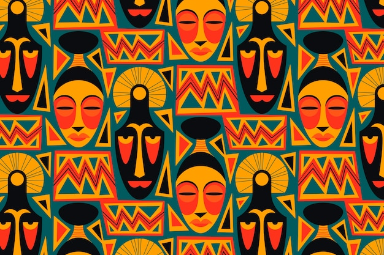

Current Exhibition

Ethereal Landscapes
Hand-pointed using natural pigments on textured convas,2024
Rwfr 1,000,000

Organic abstractions
Mixed media on reclaimed wood,2024
Rwfr 250,000

Chromatic Harmony
Oil and gold leaf on convas,2024
Rwfr 400,000